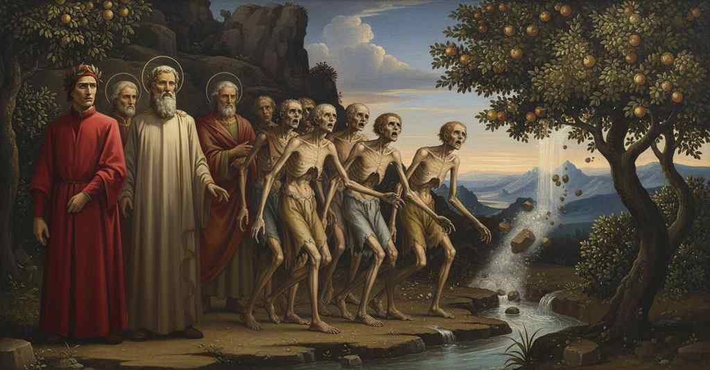

Purgatorio — Canto 23

Nel girone dei golosi, Dante incontra l'amico Forese Donati, che gli spiega la pena purificatrice e l'efficacia delle preghiere della moglie Nella, prima di ascoltare da Dante il racconto del suo viaggio guidato da Virgilio. On the terrace of the gluttonous, Dante meets his friend Forese Donati, who explains the purifying punishment and the efficacy of his wife Nella's prayers, before hearing Dante's account of his journey guided by Virgil. 大食家の階でダンテは友人のフォレーゼ・ドナーティに出会い、彼から浄めの罰と妻ネッラの祈りの効力を聞き、その後ウェルギリウスに導かれた自らの旅を語る。
1
Mentre che li occhi per la fronda verde
While I was fixing my eyes through the green foliage
緑の葉叢の奥へと目を
2
ficcava ïo sì come far suole
just as he is wont to do
凝らしていると、よくありがちな
3
chi dietro a li uccellin sua vita perde,
who wastes his life in pursuit of little birds,
小鳥を追って生涯を無駄にする者のように、
4
lo più che padre mi dicea: «Figliuole,
the more-than-father said to me: «My son,
父以上の父は私に言った。「息子よ、
5
vienne oramai, ché ’l tempo che n’è imposto
come along now, for the time that is allotted us
さあ、もう来るのだ。我らに課された時間は
6
più utilmente compartir si vuole».
must be partitioned more usefully».
もっと有益に分け合わねばならぬのだから」。
7
Io volsi ’l viso, e ’l passo non men tosto,
I turned my face, and my steps no less quickly,
私は顔を向け、歩みも劣らず速やかに、
8
appresso i savi, che parlavan sìe,
behind the sages, who were speaking in such a way,
賢者たちの後に続いた。彼らの話は実に、
9
che l’andar mi facean di nullo costo.
that they made the walking seem of no cost to me.
私の歩みを何の苦もないものにしていた。
10
Ed ecco piangere e cantar s’udìe
And behold, weeping and singing were heard,
そして見よ、泣きながら歌うのが聞こえた
11
‘Labïa mëa, Domine’ per modo
‘Labïa mëa, Domine,’ in such a way
「主よ、わが唇を」と、そのようなやり方で
12
tal, che diletto e doglia parturìe.
that it gave birth to delight and to grief.
喜びと苦しみの両方を生み出すように。
13
«O dolce padre, che è quel ch’i’ odo?»,
«O sweet father, what is that which I hear?»,
「おお、優しき父よ、私が聞いているあれは何ですか？」
14
comincia’ io; ed elli: «Ombre che vanno
I began; and he: «Shades who go
と私は尋ね始めた。すると彼は、「行く影たちだ
15
forse di lor dover solvendo il nodo».
perhaps loosening the knot of their obligation».
おそらくは自らの義務の結び目を解いているのだろう」。
16
Sì come i peregrin pensosi fanno,
Just as thoughtful pilgrims do,
物思いに沈む巡礼者たちがするように、
17
giugnendo per cammin gente non nota,
when meeting on the road with people unknown,
道で見知らぬ人々に追いつくと、
18
che si volgono ad essa e non restanno,
who turn to them but do not stop,
彼らに振り向きはするが、立ち止まりはしないように、
19
così di retro a noi, più tosto mota,
so from behind us, moving more quickly,
そのように我々の後ろから、より速い動きで、
20
venendo e trapassando ci ammirava
a silent and devout crowd of souls,
やって来ては通り過ぎながら、我々を驚嘆の目で見ていた
21
d’anime turba tacita e devota.
coming and passing by, was marveling at us.
物言わぬ敬虔な魂の一団が。
22
Ne li occhi era ciascuna oscura e cava,
Each one was dark and hollow in the eyes,
その目はどれも暗く窪み、
23
palida ne la faccia, e tanto scema
pale in the face, and so wasted away
顔は青ざめ、そしてひどく痩せこけて
24
che da l’ossa la pelle s’informava.
that the skin took its shape from the bones.
骨によって皮膚が形作られていた。
25
Non credo che così a buccia strema
I do not believe that to his last shred of skin
思わない、これほど皮ばかりに
26
Erisittone fosse fatto secco,
Erysichthon was made so dry
エリシクトンが干からびたとは、
27
per digiunar, quando più n’ebbe tema.
by fasting, when he feared it most.
断食によって、彼が最もそれを恐れた時でさえ。
28
Io dicea fra me stesso pensando: ‘Ecco
I said to myself while thinking: ‘Behold
私は心の中で考えながら言った。「見よ
29
la gente che perdé Ierusalemme,
the people who lost Jerusalem,
エルサレムを失った人々だ、
30
quando Maria nel figlio diè di becco!’
when Mary struck her beak into her son!’
マリアがその息子を嘴でつついた時の！」
31
Parean l’occhiaie anella sanza gemme:
The eye-sockets seemed like rings without gems:
その目の窪みは宝石のない指輪のようだった。
32
chi nel viso de li uomini legge ‘omo’
he who reads ‘omo’ in the face of men
人間の顔に「omo」と読む者は
33
ben avria quivi conosciuta l’emme.
would have clearly recognized the M there.
ここでまさしく「M」の字を認めたであろう。
34
Chi crederebbe che l’odor d’un pomo
Who would believe that the scent of a fruit
誰が信じよう、一つの林檎の香りが
35
sì governasse, generando brama,
could have such power, generating longing,
これほど支配し、渇望を生み、
36
e quel d’un’acqua, non sappiendo como?
and the scent of water, without knowing how?
そして水の香りが、その仕組みも知らずに？
37
Già era in ammirar che sì li affama,
I was already marveling at what so famished them,
すでに私は、何が彼らをかくも飢えさせるのかと驚いていた、
38
per la cagione ancor non manifesta
the cause being not yet manifest
未だ明かされぬその原因に、
39
di lor magrezza e di lor trista squama,
of their leanness and their dismal peeling,
彼らの痩せ衰えと、その惨めな皮膚の。
40
ed ecco del profondo de la testa
and behold, from the depth of his head
そして見よ、頭の奥深くから
41
volse a me li occhi un’ombra e guardò fiso;
a shade turned his eyes to me and stared intently;
一つの影が私に目を向け、じっと見つめ、
42
poi gridò forte: «Qual grazia m’è questa?».
then he cried out loudly: «What grace is this to me?».
それから大声で叫んだ。「これは私にとって何という恩寵か？」。
43
Mai non l’avrei riconosciuto al viso;
I never would have recognized him by his face;
顔では決して彼を認識できなかっただろう。
44
ma ne la voce sua mi fu palese
but in his voice was made manifest to me
しかしその声の中に、私には明らかになった
45
ciò che l’aspetto in sé avea conquiso.
that which his appearance in itself had subdued.
その姿が自ら損なってしまったものが。
46
Questa favilla tutta mi raccese
This spark rekindled completely in me
この火花が、私の記憶の全てを再び灯した
47
mia conoscenza a la cangiata labbia,
my knowledge of the changed features,
変わり果てた面影に対する、
48
e ravvisai la faccia di Forese.
and I recognized the face of Forese.
そして私はフォレーゼの顔を認識した。
49
«Deh, non contendere a l’asciutta scabbia
"Pray, do not fixate on the dry scurf
「ああ、乾いた瘡蓋を見つめないでくれ」
50
che mi scolora», pregava, «la pelle,
that discolors," he begged, "my skin,
「私を色褪せさせる」と彼は懇願した、「この皮膚を、
51
né a difetto di carne ch’io abbia;
nor on the lack of flesh that I have;
私が持つこの肉の欠如をも。
52
ma dimmi il ver di te, dì chi son quelle
but tell me the truth of yourself, tell who are those
だがあなたの真実を私に語ってくれ、誰なのだあれは
53
due anime che là ti fanno scorta;
two souls that there make you an escort;
あなたをそこで案内している二つの魂は。
54
non rimaner che tu non mi favelle!».
do not remain without speaking to me!".
私に話さずにいることのないように！」
55
«La faccia tua, ch’io lagrimai già morta,
"Your face, which I wept for when it was dead,
「あなたの顔は、かつて死んだ時に私が涙した、
56
mi dà di pianger mo non minor doglia»,
gives me now no less grief for weeping,"
今また、それに劣らぬ悲しみを私に与える」
57
rispuos’ io lui, «veggendola sì torta.
I answered him, "seeing it so disfigured.
と私は彼に答えた、「それほどに歪んだ姿を見て。
58
Però mi dì, per Dio, che sì vi sfoglia;
Therefore tell me, for God's sake, what so strips you;
だから教えてくれ、神にかけて、何があなた方をそのように剥ぎ取るのか。
59
non mi far dir mentr’ io mi maraviglio,
do not make me speak while I am in wonder,
私が驚嘆している間に話させないでくれ、
60
ché mal può dir chi è pien d’altra voglia».
for he speaks ill who is full of another desire".
なぜなら他の思いに満ちた者はうまく語れないのだから」
61
Ed elli a me: «De l’etterno consiglio
And he to me: "From the eternal counsel
すると彼は私に、「永遠の摂理から
62
cade vertù ne l’acqua e ne la pianta
a power falls into the water and into the plant
力が水と植物の中に降り注ぐのだ
63
rimasa dietro ond’ io sì m’assottiglio.
left behind, from which I so grow thin.
後ろに残された、それゆえに私はかくも痩せ衰える。
64
Tutta esta gente che piangendo canta
All these people who, weeping, sing,
この民は皆、泣きながら歌っている
65
per seguitar la gola oltra misura,
for having followed their gluttony beyond measure,
度を超して大食に従ったために、
66
in fame e ’n sete qui si rifà santa.
in hunger and in thirst here make themselves holy again.
飢えと渇きの中で、ここで再び聖なるものとなる。
67
Di bere e di mangiar n’accende cura
The desire to drink and to eat is kindled in us
飲むことと食べることへの渇望を我らに灯すのは
68
l’odor ch’esce del pomo e de lo sprazzo
by the scent that comes from the fruit and from the spray
果実と飛沫から発せられる香り
69
che si distende su per sua verdura.
that spreads up over its green foliage.
その緑の葉の上に広がる。
70
E non pur una volta, questo spazzo
And not just once, this circuit
そして一度ならず、この環道を
71
girando, si rinfresca nostra pena:
circling, is our pain renewed:
回りながら、我らの苦しみは新たにされる。
72
io dico pena, e dovria dir sollazzo,
I say pain, and I should say solace,
私は苦しみと言うが、慰めと言うべきだろう、
73
ché quella voglia a li alberi ci mena
for that same will leads us to the trees
なぜなら、その同じ意志が我らを木々へと導くのだ
74
che menò Cristo lieto a dire ‘Elì’,
that led Christ gladly to say 'Eli,'
キリストを喜んで『エリ』と言わしめた、
75
quando ne liberò con la sua vena».
when he liberated us with his own vein".
彼がその血潮で我らを解放した時に」
76
E io a lui: «Forese, da quel dì
And I to him: «Forese, from that day
そして私は彼に言った。「フォレーゼ、君があの世から
77
nel qual mutasti mondo a miglior vita,
in which you changed worlds for a better life,
より善い生命へと移ったあの日から、
78
cinqu’ anni non son vòlti infino a qui.
five years have not yet turned to this one.
ここまで五年も経ってはいない。
79
Se prima fu la possa in te finita
If the power in you to sin more
もし君の中で罪を犯す力が尽きるのが
80
di peccar più, che sovvenisse l’ora
was finished before the hour of good sorrow
神と我らを再び結びつける善き痛悔の
81
del buon dolor ch’a Dio ne rimarita,
that remarries us to God arrived,
時が訪れるよりも先であったのなら、
82
come se’ tu qua sù venuto ancora?
how have you come up here already?
どうして君はもうこんな高みに来たのか？
83
Io ti credea trovar là giù di sotto,
I thought I would find you down below,
私は君をあそこの下、
84
dove tempo per tempo si ristora».
where time for time is paid back».
時をもって時を償う場所で見つけると思っていた」。
85
Ond’ elli a me: «Sì tosto m’ha condotto
Whence he to me: «So soon has led me
すると彼は私に言った。「こんなにも早く私を
86
a ber lo dolce assenzo d’i martìri
to drink the sweet wormwood of these torments
殉難という甘き苦よもぎを飲むべく導いたのは
87
la Nella mia con suo pianger dirotto.
my Nella with her streaming tears.
私のネッラの、その絶え間ない涙なのだ。
88
Con suoi prieghi devoti e con sospiri
With her devout prayers and with sighs
彼女の敬虔な祈りと溜息とで
89
tratto m’ha de la costa ove s’aspetta,
she has drawn me from the slope where one waits,
私を待機する岸辺から引き上げ、
90
e liberato m’ha de li altri giri.
and has freed me from the other circles.
そして他の圏からも解放してくれたのだ。
91
Tanto è a Dio più cara e più diletta
So much more dear and more beloved to God
私が深く愛した我が未亡人は、
92
la vedovella mia, che molto amai,
is my little widow, whom I loved much,
善き行いをなす上で孤独であればあるほど、
93
quanto in bene operare è più soletta;
as in doing good she is more alone;
それだけ神にとってより愛しく、より好ましいのだ。
94
ché la Barbagia di Sardigna assai
for the Barbagia of Sardinia is far
なぜならサルデーニャのバルバージャは
95
ne le femmine sue più è pudica
more modest in its women
その地の女たちにおいて、ずっと貞淑なのだから
96
che la Barbagia dov’ io la lasciai.
than the Barbagia where I left her.
私が彼女を後にしたバルバージャ（フィレンツェ）よりも。
97
O dolce frate, che vuo’ tu ch’io dica?
O sweet brother, what do you want me to say?
おお、優しき兄弟よ、君に何を言わせたいのか？
98
Tempo futuro m’è già nel cospetto,
A future time is already in my sight,
未来の時がすでに私の眼前にあり、
99
cui non sarà quest’ ora molto antica,
to which this hour will not be very old,
その時まで今のこの時はさほど古くはならぬだろう、
100
nel qual sarà in pergamo interdetto
in which it will be forbidden from the pulpit
その時には説教壇から禁じられるだろう
101
a le sfacciate donne fiorentine
to the shameless Florentine women
恥知らずなフィレンツェの女たちが
102
l’andar mostrando con le poppe il petto.
the going about showing their breasts with their paps.
乳房もあらわに胸を見せびらかして歩くことが。
103
Quai barbare fuor mai, quai saracine,
What barbarian women were there ever, what Saracen women,
いかなる蛮族の女が、いかなるサラセンの女が、
104
cui bisognasse, per farle ir coperte,
for whom it was necessary, to make them go covered,
彼女らを覆い隠して歩かせるために、
105
o spiritali o altre discipline?
either spiritual or other disciplines?
宗教上のあるいは他の定めを必要としただろうか？
106
Ma se le svergognate fosser certe
But if the shameless ones were certain
だが、もしあの恥知らずな女たちが確信していたなら
107
di quel che ’l ciel veloce loro ammanna,
of what the swift heaven prepares for them,
速やかなる天が彼女たちのために用意するものを、
108
già per urlare avrian le bocche aperte;
already for howling they would have their mouths open;
すでに叫び声を上げるために口を開けているだろう。
109
ché, se l’antiveder qui non m’inganna,
for, if foresight here does not deceive me,
なぜなら、もしここの予見が私を欺かぬなら、
110
prima fien triste che le guance impeli
they will be sad before he grows hair on his cheeks
彼女たちは、今子守唄であやされている者が
111
colui che mo si consola con nanna.
who now is consoled with a lullaby.
その頬に髭を生やすよりも先に、悲しむことになるのだから。
112
Deh, frate, or fa che più non mi ti celi!
“Ah, brother, now do not hide yourself from me any longer!
ああ、兄弟よ、どうかもう私に身を隠さないでくれ！
113
vedi che non pur io, ma questa gente
you see that not just I, but all these people
見よ、私だけでなく、この人々が
114
tutta rimira là dove ’l sol veli».
are gazing there where you veil the sun.”
皆、あなたが太陽を覆うところを凝視しているのだから」。
115
Per ch’io a lui: «Se tu riduci a mente
So I to him: “If you bring back to mind
そこで私は彼に言った。「もし君が心に思い出すなら
116
qual fosti meco, e qual io teco fui,
what you were with me, and what I was with you,
君が私と共にどうであったか、私が君と共にどうであったかを、
117
ancor fia grave il memorar presente.
the present memory will still be grievous.
今それを思い出すことは、なおも辛いだろう。
118
Di quella vita mi volse costui
From that life this one turned me,
あの生活から私を引き離してくれたのはこの方だ、
119
che mi va innanzi, l’altr’ ier, quando tonda
who goes before me, the other day, when round
私の前を行くこの方が、先だって、丸い姿で
120
vi si mostrò la suora di colui»,
the sister of him showed herself to you,”
かの御方の妹君があなた方に現れた時に」、
121
e ’l sol mostrai; «costui per la profonda
and I showed the sun; “this one through the profound
と私は太陽を指し示した。「この方は深い
122
notte menato m’ha d’i veri morti
night has led me, of the truly dead,
夜を通して、真の死者たちの間から私を導いた
123
con questa vera carne che ’l seconda.
with this true flesh that follows him.
彼に従うこの真の肉体と共に。
124
Indi m’han tratto sù li suoi conforti,
Thence his comforts have drawn me up,
それから、その方の励ましが私を引き上げてくれた、
125
salendo e rigirando la montagna
climbing and circling the mountain
この山を登り、巡りながら
126
che drizza voi che ’l mondo fece torti.
that makes you straight whom the world made crooked.
世が歪めたあなた方を真っ直ぐにするこの山を。
127
Tanto dice di farmi sua compagna
He says he will be my companion for so long
この方は、私に伴ってくれると、そこまで言ってくれている
128
che io sarò là dove fia Beatrice;
that I will be there where Beatrice will be;
私がベアトリーチェのいる場所に着くまで。
129
quivi convien che sanza lui rimagna.
there it is fitting that I remain without him.
そこでは、彼なしで留まらねばならない。
130
Virgilio è questi che così mi dice»,
Virgil is this one who so tells me,”
ウェルギリウスが、そのように私に告げるこの方だ」、
131
e addita’lo; «e quest’ altro è quell’ ombra
and I pointed to him; “and this other is that shade
と彼を指し示した。「そしてこのもう一方こそ、あの魂だ
132
per cuï scosse dianzi ogne pendice
for whom a little while ago every slope shook
そのために先ほど、あらゆる斜面が揺れたのだ
133
lo vostro regno, che da sé lo sgombra».
of your kingdom, which now clears him from itself.”
あなた方の王国が、自ら彼を解き放つのです」。